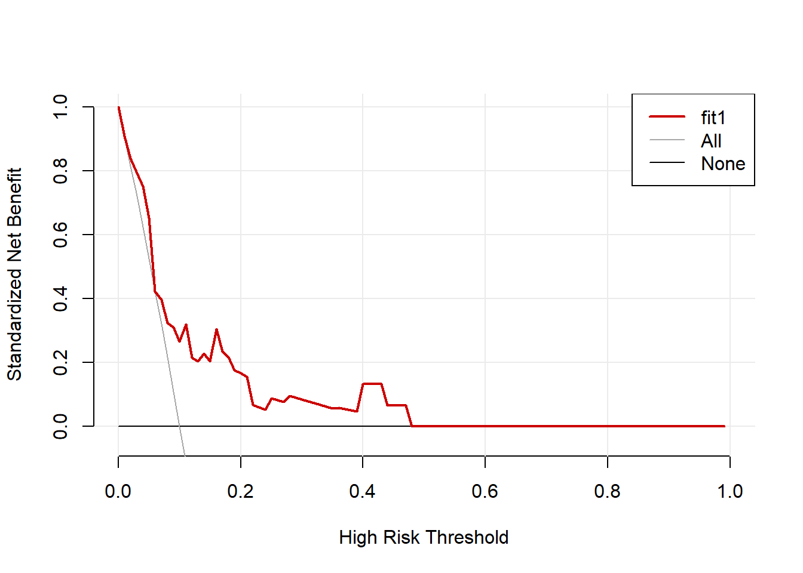
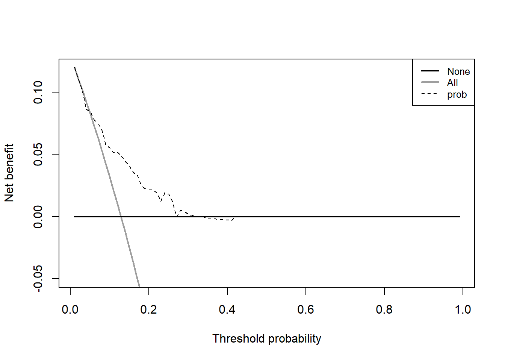
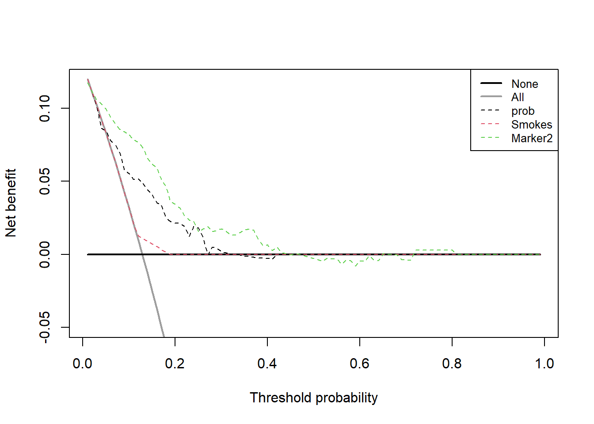
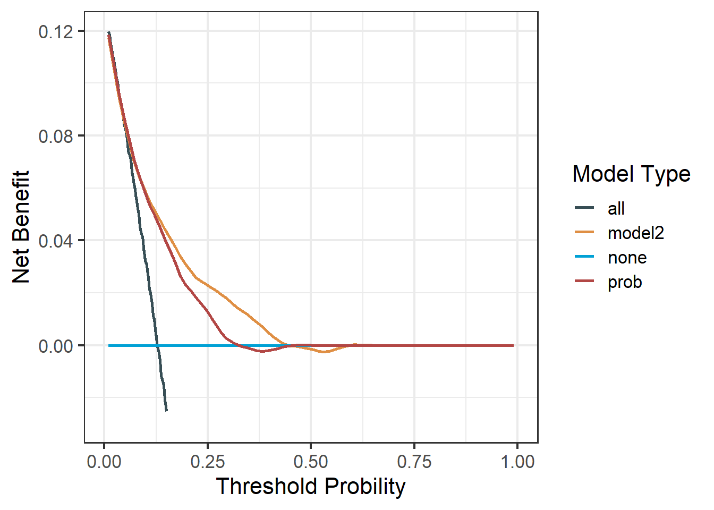
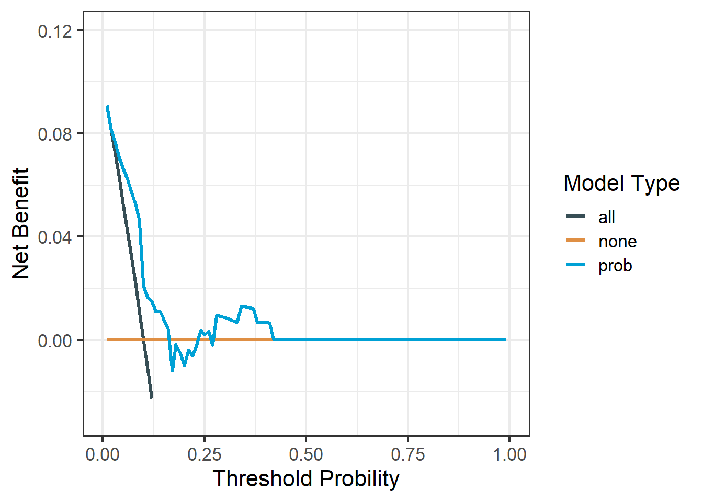

# 先安装R包
install.packages("rmda")34 分类数据的决策曲线
临床决策曲线分析(decision curve analysis，DCA)，更佳贴近临床实际，对临床工作的开展比AUC/NRI/IDI等更具有指导意义。
我刚接触DCA的时候一个正经画DCA的R包都没有，现在R语言画DCA的方法实在是太多了，我这里只介绍了5种方法。大家看着喜欢哪个就用哪个吧。
34.1 方法1：rmda
使用rmda包。
使用这个包自带的一个dcaData作为演示，这个数据集一共500行，6列，其中Cancer是结果变量，1代表患病，0代表没病，其余列是预测变量。
library(rmda)
data("dcaData")
dim(dcaData) # 500,6
## [1] 500 6
head(dcaData)
## # A tibble: 6 × 6
## Age Female Smokes Marker1 Marker2 Cancer
## <int> <dbl> <lgl> <dbl> <dbl> <int>
## 1 33 1 FALSE 0.245 1.02 0
## 2 29 1 FALSE 0.943 -0.256 0
## 3 28 1 FALSE 0.774 0.332 0
## 4 27 0 FALSE 0.406 -0.00569 0
## 5 23 1 FALSE 0.508 0.208 0
## 6 35 1 FALSE 0.186 1.41 0
str(dcaData)
## tibble [500 × 6] (S3: tbl_df/tbl/data.frame)
## $ Age : int [1:500] 33 29 28 27 23 35 34 29 35 27 ...
## $ Female : num [1:500] 1 1 1 0 1 1 1 1 1 1 ...
## $ Smokes : logi [1:500] FALSE FALSE FALSE FALSE FALSE FALSE ...
## $ Marker1: num [1:500] 0.245 0.943 0.774 0.406 0.508 ...
## $ Marker2: num [1:500] 1.02108 -0.25576 0.33184 -0.00569 0.20753 ...
## $ Cancer : int [1:500] 0 0 0 0 0 0 0 0 0 0 ...划分训练集测试集，划分比例为7：3。
set.seed(123)
train <- sample(1:nrow(dcaData), nrow(dcaData)*0.7)
train_df <- dcaData[train,]
test_df <- dcaData[- train,]
dim(train_df)
## [1] 350 6
dim(test_df)
## [1] 150 634.1.1 训练集
使用起来非常简单，首先构建dca，然后画图：
set.seed(123)
# 构建DCA
fit1 <- decision_curve(Cancer ~ Age + Female + Smokes, # 自变量和因变量
data = train_df, # 训练集数据
study.design = "cohort", # 选择研究类型
bootstraps = 50 # 重抽样次数
)
# 画图
plot_decision_curve(fit1, curve.names = "fit1",
cost.benefit.axis = F, # 是否需要损失：获益比 轴
confidence.intervals = "none" # 不画可信区间
)可以查看模型中的各个数据的值：
# 数据很大，没有展示全部，大家可以自己运行看看
summary(fit1)给出了详细的概率阈值(展示部分)：
多个模型的多条DCA曲线一起绘制也是可以的：
# 新建立1个模型
set.seed(123)
fit2 <- decision_curve(Cancer~Age + Female + Smokes + Marker1 + Marker2,
data = train_df,
bootstraps = 50
)
# 画图只要把多个模型放在1个列表中即可，还可以进行很多自定义调整
plot_decision_curve(list(fit1, fit2),
curve.names = c("fit1", "fit2"),
xlim = c(0, 1), # 可以设置x轴范围
legend.position = "topright", # 图例位置,
col = c("red","blue"), # 自定义颜色
confidence.intervals = "none",
lty = c(1,2), # 线型，注意顺序
lwd = c(3,2,2,1) #注意顺序,先是自己的模型,然后All,然后None
)这个包还可以绘制临床影响曲线(这也是我目前发现的唯一能绘制临床影响曲线的包)：
# 1次只能绘制1个模型
plot_clinical_impact(fit1,
population.size= 1000,
cost.benefit.axis = T,
n.cost.benefits= 8,
col=c('red','blue'),
confidence.intervals= T,
ylim=c(0,1000),
legend.position="topright")这就是这个包画DCA的例子，效果还是不错的，自定义设置也很多，方便大家画出更好看的图。这个包还有很多其他功能，我们就不演示了，感兴趣的小伙伴可以自己探索哦。美中不足的是不能画生存资料的DCA。
34.1.2 测试集
只需要提供测试集数据即可：
set.seed(123)
# 构建DCA
fit1 <- decision_curve(Cancer ~ Age + Female + Smokes, # 自变量和因变量
data = test_df, # 测试集数据
study.design = "cohort", # 选择研究类型
bootstraps = 50 # 重抽样次数
)
# 画图
plot_decision_curve(fit1, curve.names = "fit1",
cost.benefit.axis = F, # 是否需要损失：获益比 轴
confidence.intervals = "none" # 不画可信区间
)
测试集的临床影响曲线：
# 1次只能绘制1个模型
plot_clinical_impact(fit1,
population.size= 1000,
cost.benefit.axis = T,
n.cost.benefits= 8,
col=c('red','blue'),
confidence.intervals= T,
ylim=c(0,1000),
legend.position="topright")
34.2 方法2：dca.r
这个方法是纪念斯隆·凯特林癌症中心给出的方法，非常正规，目前绝大多数其他实现DCA的方法都是基于此方法实现的。
曾经，纪念斯隆·凯特林癌症中心的官网网站会让你免费下载dca.r/stdca.r这两段脚本，可分别用于二分类数据和生存数据的决策曲线分析，但是非常遗憾的是，目前该网站已不再提供代码下载了。
注意
这个网站（https://www.mskcc.org/departments/epidemiology-biostatistics/biostatistics/decision-curve-analysis）已经不再提供该代码的下载，我在多年前就下载好了，我把dca.r/stdca.r这两段代码已经放在粉丝QQ群文件，需要的加群下载即可。
34.2.1 训练集
还是使用rmda包的数据，首先我们画一个简单的DCA，结果变量是Cancer，预测变量我们只用一个Smokes。使用起来非常简单，一句代码即可：
source("./datasets/dca.r")
# 变为数据框类型
train_df <- as.data.frame(train_df)
dd <- dca(data = train_df, # 指定数据集,必须是data.frame类型
outcome="Cancer", # 指定结果变量
predictors="Smokes", # 指定预测变量
probability = F, # Smokes这一列是0,1组成的二分类变量，不是概率，所以是F
xstop = 0.3 # x轴范围
)但是如果你的预测变量不是0,1这种，或者有多个的话，这时候需要你先把预测概率算出来，才能使用这个函数。
# 建立包含多个自变量的logistic模型
model <- glm(Cancer ~ Age + Female + Smokes,
family=binomial(),
data = train_df
)
# 算出概率
train_df$prob <- predict(model, type="response")
# 绘制多个预测变量的DCA
dd <- dca(data=train_df, outcome="Cancer", predictors="prob",
probability = T
)
把多个模型画在一起的方式需要注意，比如我们下面演示下3个模型画在一起，其中prob代表的是上面的model模型，Marker2代表的是只有一个预测变量Marker2的模型，Smokes代表只有一个预测变量Smokes的模型！
prob是概率，所以是T，Smokes和Marker2不是概率，所以是F。
dd <- dca(data = train_df, outcome="Cancer",
predictors=c("prob","Smokes","Marker2"), # 这是3个模型！
probability = c(T,F,F) # 和上面是对应的！
)
## [1] "Smokes converted to a probability with logistic regression. Due to linearity assumption, miscalibration may occur."
## [1] "Marker2 converted to a probability with logistic regression. Due to linearity assumption, miscalibration may occur."
34.2.2 测试集
如果只有1个预测变量，直接用即可：
# 变为数据框类型
test_df <- as.data.frame(test_df)
dd <- dca(data = test_df, # 指定数据集,必须是data.frame类型
outcome="Cancer", # 指定结果变量
predictors="Smokes", # 指定预测变量
probability = F, # Smokes这一列是0,1组成的二分类变量，不是概率，所以是F
xstop = 0.3 # x轴范围
)
## [1] "Smokes converted to a probability with logistic regression. Due to linearity assumption, miscalibration may occur."如果有多个预测变量，需要自己计算出概率，再画图：
# 在训练集建立包含多个自变量的logistic模型
model <- glm(Cancer ~ Age + Female + Smokes,
family=binomial(),
data = train_df
)
# 算出测试集的概率
test_df$prob <- predict(model, type="response", newdata = test_df)
# 绘制多个预测变量的DCA
dd <- dca(data=test_df, outcome="Cancer", predictors="prob",
probability = T)
其他的就不再重复说了。
34.3 方法3：DIY
上面的方法自定义选项也很少，不利于美化图形。但是呢，有一个优点就是可以直接返回画图数据，我们只要稍加修改，就能使用ggplot2画图了！而且由于直接给出了源码，我们可以试着自己修改，这样可发挥的地方就太多了！
下面几个将要介绍的方法，都是可以返回数据的，都支持使用ggplot2画图！
下面我们返回2个模型的画图数据，自己稍加整理，然后使用ggplot2画DCA，大家如果只有1个模型或者更多的模型，道理都是一样的哦，就是整成ggplot2需要的格式就行了！
34.3.1 训练集
# 返回模型1的画图数据
source("./datasets/dca.r")
# 建立包含多个自变量的logistic模型
model <- glm(Cancer ~ Age + Female + Smokes,
family=binomial(),
data = train_df
)
# 算出概率
train_df$prob <- predict(model, type="response")
# 绘制多个预测变量的DCA,返回画图数据
dca_data1 <- dca(data=train_df, outcome="Cancer", predictors="prob",
probability = T, graph = F)然后提取数据，数据转换：
# 转换数据
library(tidyr)
dca_df1 <- dca_data1$net.benefit %>% # 画图数据就藏在这里！
# 变成长数据,还不懂长宽数据转换这个超强操作的快去翻一下历史文章！
pivot_longer(cols = -threshold, names_to = "type", values_to = "net_benefit")
# 看下数据结构
str(dca_df1)
## tibble [297 × 3] (S3: tbl_df/tbl/data.frame)
## $ threshold : num [1:297] 0.01 0.01 0.01 0.02 0.02 0.02 0.03 0.03 0.03 0.04 ...
## $ type : chr [1:297] "all" "none" "prob" "all" ...
## $ net_benefit: num [1:297] 0.12 0 0.12 0.111 0 ...画图就是非常简单了，先给大家看看只画1个模型的例子：
library(ggplot2)
library(ggsci)
# 以prob这个模型为例
ggplot(dca_df1, aes(threshold, net_benefit, color = type))+
geom_line(linewidth = 1.2)+
scale_color_jama(name = "Model Type")+ # c("steelblue","firebrick","green4")
scale_y_continuous(limits = c(-0.03,0.12),name = "Net Benefit")+
#限定y轴范围是重点，你可以去掉这句看看
scale_x_continuous(limits = c(0,1),name = "Threshold Probility")+
theme_bw(base_size = 16)+
theme(legend.position.inside = c(0.8,0.8),
legend.background = element_blank()
)
看着是不是比上面的颜值都高些？是不是已经有了JAMA杂志的味道？
下面是2个模型画在一起的例子，和上面的思路一模一样！
# 构建模型2
mod2 <- glm(Cancer ~ Marker1 + Age + Smokes, train_df, family = binomial)
train_df$model2 <- predict(mod2, type="response")
# 返回两个模型的画图数据
dca12 <- dca(data = train_df,
outcome="Cancer",
predictors=c("prob","model2") ,
probability = c(T,T),
graph = F
)
# 合并数据，大家可以打开这2个数据看下，可以直接合并
library(dplyr)
dca_df_all <- dca12$net.benefit %>%
pivot_longer(cols = -threshold,names_to = "models",values_to = "net_benefit")
glimpse(dca_df_all)
## Rows: 396
## Columns: 3
## $ threshold <dbl> 0.01, 0.01, 0.01, 0.01, 0.02, 0.02, 0.02, 0.02, 0.03, 0.03…
## $ models <chr> "all", "none", "prob", "model2", "all", "none", "prob", "m…
## $ net_benefit <dbl> 0.11976912, 0.00000000, 0.11976912, 0.11976912, 0.11078717…画图也是一样的简单：
ggplot(dca_df_all, aes(threshold, net_benefit, color = models))+
#geom_line(size = 1.2)+
stat_smooth(method = "loess", se = FALSE, formula = "y ~ x", span = 0.2)+
# 灵感来自于方法5！
scale_color_jama(name = "Model Type")+
scale_y_continuous(limits = c(-0.03,0.12),name = "Net Benefit")+
scale_x_continuous(limits = c(0,1),name = "Threshold Probility")+
theme_bw(base_size = 16)+
theme(legend.position.inside = c(0.8,0.75),
legend.background = element_blank()
)
挺好，还是不错的，能直接返回数据的都是可以高度自定义的，配合ggplot2，你可以尽情发挥。
在今天推荐的所有方法中，这个方法我是最喜欢的，虽然只有一段代码，连个正经的R包都没有，但是很明显这个方法的潜力最大！只要你会自己修改，那这个方法就是万能的，适合很多模型的DCA绘制！
34.3.2 测试集
还是首先获取测试集的预测概率：
# 建立包含多个自变量的logistic模型
model <- glm(Cancer ~ Age + Female + Smokes,
family=binomial(),
data = train_df
)
# 算出测试集的概率
test_df$prob <- predict(model, type="response", newdata = test_df)
# 绘制多个预测变量的DCA
dca_data1 <- dca(data=test_df, outcome="Cancer", predictors="prob",
probability = T, graph = F)然后提取数据，数据转换：
# 转换数据
library(tidyr)
dca_df1 <- dca_data1$net.benefit %>% # 画图数据就藏在这里！
# 变成长数据,还不懂长宽数据转换这个超强操作的快去翻一下历史文章！
pivot_longer(cols = -threshold, names_to = "type", values_to = "net_benefit")
# 看下数据结构
str(dca_df1)
## tibble [297 × 3] (S3: tbl_df/tbl/data.frame)
## $ threshold : num [1:297] 0.01 0.01 0.01 0.02 0.02 0.02 0.03 0.03 0.03 0.04 ...
## $ type : chr [1:297] "all" "none" "prob" "all" ...
## $ net_benefit: num [1:297] 0.0909 0 0.0909 0.0816 0 ...画图即可：
library(ggplot2)
library(ggsci)
# 以prob这个模型为例
ggplot(dca_df1, aes(threshold, net_benefit, color = type))+
geom_line(linewidth = 1.2)+
scale_color_jama(name = "Model Type")+ # c("steelblue","firebrick","green4")
scale_y_continuous(limits = c(-0.03,0.12),name = "Net Benefit")+
#限定y轴范围是重点，你可以去掉这句看看
scale_x_continuous(limits = c(0,1),name = "Threshold Probility")+
theme_bw(base_size = 16)+
theme(legend.position.inside = c(0.8,0.8),
legend.background = element_blank()
)
34.4 方法4：ggDCA
使用ggDCA包，和上面的提取数据再画图有点像，不过它给你简化了，一句代码即可，省事儿！
# 安装R包，建议安装github版本，不然会出问题
remotes::install_github('yikeshu0611/ggDCA')34.4.1 训练集
还是使用rmda包里面自带的dcaData演示。
library(ggDCA)
library(rmda)
#options(datadist= dd )
# 构建模型
fit1 <- glm(Cancer ~ Age + Female + Smokes,
data = train_df, family = binomial())
fit2 <- glm(Cancer~Age + Female + Smokes + Marker1 + Marker2,
data = train_df,family = binomial())画图，非常简洁！
library(ggplot2)
dca1 <- ggDCA::dca(fit1)
ggplot(dca1)大家可以使用ggplot2语法继续修改细节，在此之前先给大家看看这个dca1的数据结构。
str(dca1)
## Classes 'dca.lrm' and 'data.frame': 182 obs. of 5 variables:
## $ thresholds: num 0.0242 0.0245 0.0289 0.0291 0.0344 ...
## $ TPR : num 0.129 0.129 0.129 0.129 0.126 ...
## $ FPR : num 0.871 0.857 0.831 0.814 0.794 ...
## $ NB : num 0.1069 0.1071 0.1039 0.1041 0.0974 ...
## $ model : Factor w/ 3 levels "fit1","All","None": 1 1 1 1 1 1 1 1 1 1 ...还自动算出了TPR和FPR，如果你想画ROC的话也是一句代码的事，咱就不演示了！就给大家演示下怎么自定义细节。
ggplot(dca1,linetype = 1,color = c("firebrick","steelblue","green4"))+
theme(legend.position = c(0.8,0.75))多个模型画在一起也是非常简单！
# 2个模型画在一起
dca12 <- ggDCA::dca(fit1,fit2)
ggplot(dca12, linetype = 1,
color = c("firebrick","steelblue","green4","tomato"))+
theme(legend.position = c(0.8,0.75))简洁强大！
34.4.2 测试集
也是只要1行代码即可：
aa <- ggDCA::dca(fit1,new.data=test_df)
ggplot(aa)但是这个包画出的测试集的决策曲线和其他R包差别较大，有人建议大家慎用该方法：二分类logistic回归模型决策曲线的绘制与解读
34.5 方法5：dcurves
使用dcurves包，这个包是官方基于方法2的代码写的，所以也算是一个官方的方法，虽然你没有dca.r/stdca.r，但是你可以直接使用dcurves包。
# 安装,2选1
install.packages("dcurves")
# install.packages("devtools")
devtools::install_github("ddsjoberg/dcurves")还是使用rmda包的dcaData数据进行演示。
34.5.1 训练集
和dca.r的使用很像。废话不多说了，直接上 画2个模型DCA 的代码。
library(dcurves)
library(rmda)
data("dcaData")
# 建立2个模型，算出概率
mod1 <- glm(Cancer ~ Marker1 + Age + Smokes, train_df, family = binomial)
train_df$model1 <- predict(mod1, type="response")
mod2 <- glm(Cancer ~ Marker1 + Marker2 + Age + Smokes + Female,
train_df, family = binomial)
train_df$model2 <- predict(mod2, type="response")
dcurves::dca(Cancer ~ model1 + model2,
data = train_df
) %>%
plot(smooth = T,
show_ggplot_code = T # 显示ggplot2代码，方便大家自己调整
)
## # ggplot2 code to create DCA figure -------------------------------
## as_tibble(x) %>%
## dplyr::filter(!is.na(net_benefit)) %>%
## ggplot(aes(x = threshold, y = net_benefit, color = label)) +
## stat_smooth(method = "loess", se = FALSE, formula = "y ~ x",
## span = 0.2) +
## coord_cartesian(ylim = c(-0.0128571428571429, 0.128571428571429
## )) +
## scale_x_continuous(labels = scales::percent_format(accuracy = 1)) +
## labs(x = "Threshold Probability", y = "Net Benefit", color = "") +
## theme_bw()大家看到ggplot2的代码了吧？自己调整就可以了。
34.5.2 测试集
也是展示同时画两个曲线，只需要提前计算出预测概率即可：
test_df$model1 <- predict(mod1, type="response",newdata = test_df)
test_df$model2 <- predict(mod2, type="response",newdata = test_df)
dcurves::dca(Cancer ~ model1 + model2,
data = test_df
) %>%
plot(smooth = T,
show_ggplot_code = T # 显示ggplot2代码，方便大家自己调整
)
## # ggplot2 code to create DCA figure -------------------------------
## as_tibble(x) %>%
## dplyr::filter(!is.na(net_benefit)) %>%
## ggplot(aes(x = threshold, y = net_benefit, color = label)) +
## stat_smooth(method = "loess", se = FALSE, formula = "y ~ x",
## span = 0.2) +
## coord_cartesian(ylim = c(-0.01, 0.1)) +
## scale_x_continuous(labels = scales::percent_format(accuracy = 1)) +
## labs(x = "Threshold Probability", y = "Net Benefit", color = "") +
## theme_bw()今天就给大家简单介绍下logistic回归DCA的5种画法，其实还有很多，留着以后再介绍吧，实在是写不动了。。除了常见的logistic、cox，其实随机森林、决策树、lasso、xgboost、SVM等很多模型都是可以绘制DCA的，更多进阶内容可以关注公众号查看。